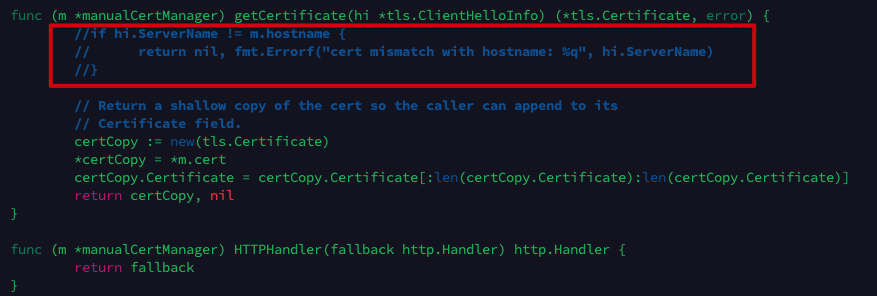
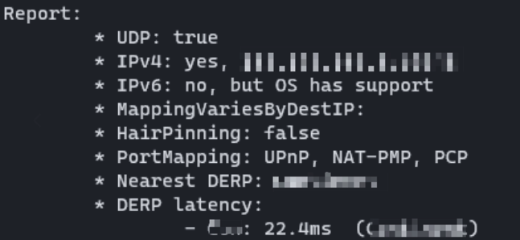

Create Tailscale Relay
So it’s almost time for vacation, but I had little mood for that. I don’t want carry all my laptops, it’s inconvenient. So i finally decided to use a server with public IP to act as a relay.
The article mainly followed this dude and official doc
I. Environments
- A server with public IP, i used Ubuntu 22 LTS
- Other PCs with Tailscale installed.
- A ssh app that you’d like to use, I used Terminus.
II. Preparation
Log in the server, and run software updates. （Concerning the methods of logging in, it’s better to disable password login)
1 | sudo apt update && sudo apt upgrade |
Install Go dependencies1
2
3
4apt install -y wget git openssl curl
wget https://go.dev/dl/go1.21.6.linux-amd64.tar.gz #consider using the latest version?
sudo tar -C /usr/local -xzf go1.21.5.linux-amd64.tar.gz
export PATH=$PATH:/usr/local/go/bin
Check installation with1
go version
Add path into environment variable, here I encountered some permission issue, and found out that sudo will not help with redirection root, remember to logout1
2
3
4sudo -i
echo "export PATH=$PATH:/usr/local/go/bin" >> /etc/profile
source /etc/profile
logout
Configure domestic proxy for acceleration1
2go env -w GO111MODULE=on
go env -w GOPROXY=https://goproxy.cn,direct
III. Install and configure Derp
1 | go install tailscale.com/cmd/derper@main |
Modify certification, goto ~/go/pkg/mod/tailscale@xxx/cmd/derper, comment out some lines (at nearly the last section of the file)
1 | nano cert.go |

Build derper.1
sudo go build -o /etc/derp/derper
Here I also ran into some permission issues, and using sudo suggest there is no go command. It turns out that root has its own secure_path, add :/usr/local/go/bin should do the job. It could be slow, be patient. Add -x if debug info is needed.
Sign keys.1
sudo openssl req -x509 -newkey rsa:4096 -sha256 -days 3650 -nodes -keyout /etc/derp/derp.myself.com.key -out /etc/derp/derp.myself.com.crt -subj "/CN=derp.myself.com" -addext "subjectAltName=DNS:derp.myself.com"
Configure ports1
2
3
4
5
6
7
8
9
10
11
12
13
14cat > /etc/systemd/system/derp.service <<EOF
[Unit]
Description=TS Derper
After=network.target
Wants=network.target
[Service]
User=root
Restart=always
ExecStart=/etc/derp/derper -hostname derp.myself.com -a :33445 -http-port 33446 -certmode manual -certdir /etc/derp
RestartPreventExitStatus=1
[Install]
WantedBy=multi-user.target
EOF
Consider change the port number
And in server settings open ports for TCP and 3478 for UDP for access, restart daemon
1 | systemctl daemon-reload |
If the service is not started, consider manually enable it.
Tailscale web Configuration
Into Access Control section,1
2
3
4
5
6
7
8
9
10
11
12
13
14
15
16
17
18
19"derpMap": {
"OmitDefaultRegions": true,
"Regions": {
"901": {
"RegionID": 901,
"RegionCode": "code",
"RegionName": "name",
"Nodes": [
{
"Name": "node name",
"RegionID": 901,
"DERPPort": 33445,
"IPv4": "Server IP",
"InsecureForTests": true,
},
],
},
},
},
Save, on pc with tailscale installed, run tailscale netcheck

New derp server should be detected.
Till then everything should work fine.
IV. Security measures
Once IP and ports are leaked, it is highly dangerous, install tailscale to enable device verification.
1 | curl -fsSL https://tailscale.com/install.sh | sh |
Run as instructed, and login use provided address, approve.
Then, modify derp settings, after -certdir /etc/derp add —verify-clients
Then reload service with restart.1
2
3systemctl daemon-reload
systemctl restart derp
reboot
Finally, it’s done, and easier than I thought, however when I use ping for remote connection, the latency seems to be around 100ms, which may be caused by the weak signal strength of my hotspot when inside a room.
Another thing is that I can clearly see that when connection initiates, about 15Mbps data get in the server, but at the same time, only 0.5Mbps went out of the server. Meanwhile, the CPU and RAM usage looks fine, not sure what’s going on here. Maybe find some time to figure this out in the future.